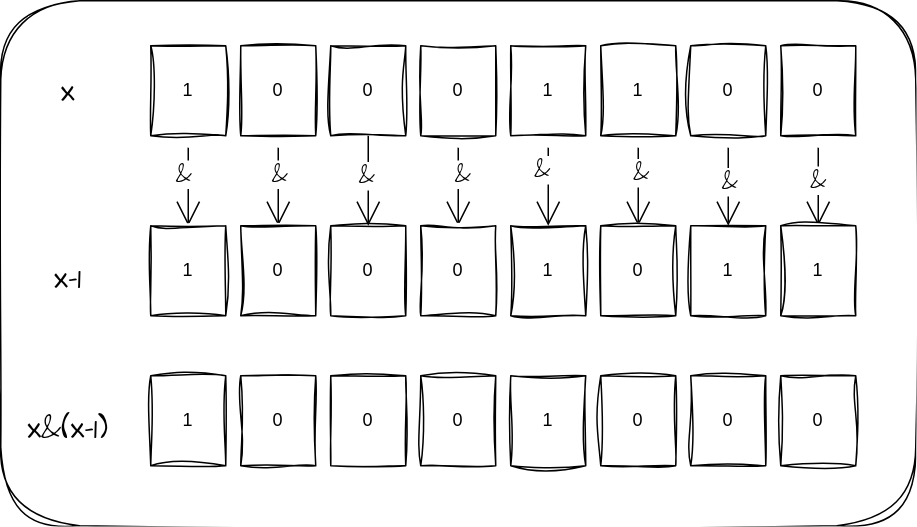
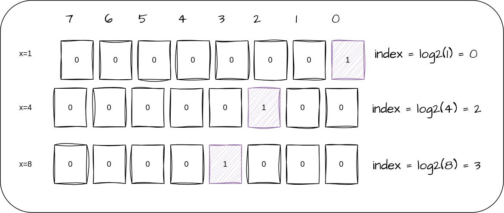
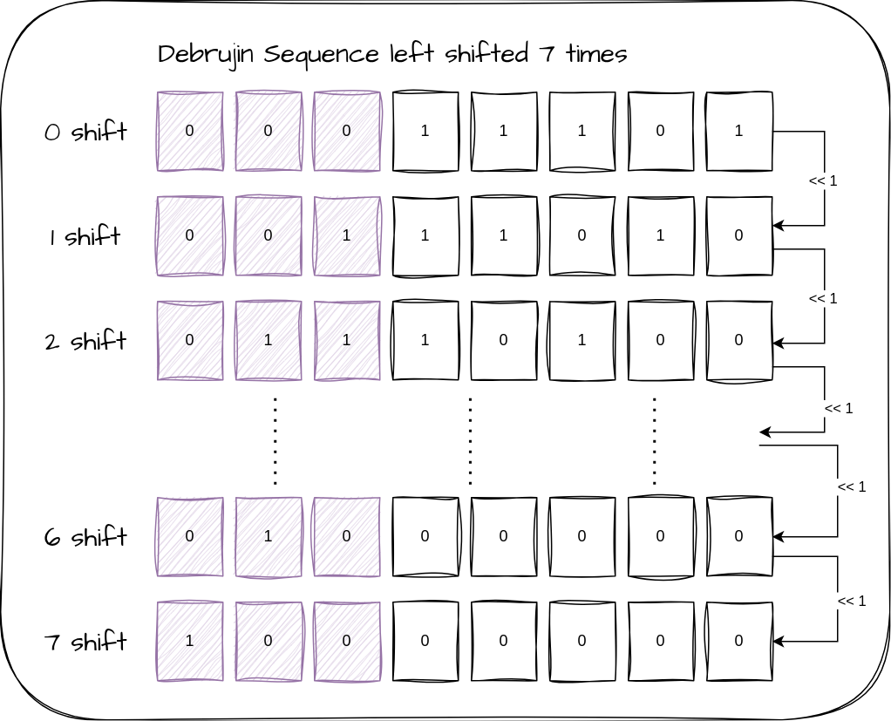

bit by bit¶
This post is meant to be a dissection of a small piece of code I wrote recently. It’s a preventive measure taken to preserve the sanity of the person(me) trying to understand the code after 6 months.
I will not bore you with the project details. The gist is, a parent board tells the child board(my firmware) to scan a particular number of channels. Now machines, being machines convey this through bitmaps. Each bit of the bitmap represents one out of 64 channels. What it is trying to say is, scan only the channels for which the bit is set to 1.
So my firmware needs to parse this bitmap and identify the channels that are selected.
The naive solution for this would be to go through each bit using a for-loop – check if the bit is set – scan if set.
for (int i = 0; i < 64; i++) {
if (bitmap & (1ULL << i)) { // Check if the ith bit is set
startScan(i+1);
}
}
By the time I wrote this I realized that I’m doing the unnecessary work of going through all the bits when I could go through just the bits that are set. And I knew an algorithm just for that.
Brian Kernighan’s method¶
Brian Kernighan, a great computer scientist once mentioned in one of his books(which happens to be the first ever book on C Language) that in a two’s complement number system, x = x & (x-1) deletes the rightmost 1-bit in x. (where ‘&’ is bitwise AND operator in C). See a 1-byte example below.

(Initial parts of this post is meant to warm up your brain to handle all the bit twiddling that follows. So you might see me over-explaining some rather simple topics)
See how only the rightmost bit is reset. If I continue this process recursively on the result - at the end - all the set bits will be deleted, making the number 00000000. This algorithm reduces the number of iterations to the number of bits set in the number, giving this algorithm a Time complexity of O(k) where k is the number of bits set in the number.
My idea – Use this algorithm to repeatedly delete the last set bit, starting the channel scan for that last set bit during each iteration!
while(bitmap !=0)
{
//Find index of the last set bit and start scan.
bitmap = bitmap & (bitmap-1);
}
Now the task that was left was to find the index of the last set bit. We need to change gears here – the post is going to get more complicated as we progress.
If we have a number with just one bit set, the index of that bit would be equal to log2 of that number. Don’t believe me? Check the image below.

Yes, single-1 numbers are powers of 2, of course you knew this already. Now, get ready for a magic trick
(x & -x) gives x with only the last bit set.
If you’re unfamiliar with two’s complement, this expression might seem like a magic trick. But once you understand how negative numbers are represented in binary, it becomes intuitive.
Two's complement Representation¶
In an n-bit system, the negative representation of a number x is obtained by subtracting it from 2ⁿ:
How Is This Done in Practice?¶
This is done in two steps:
-
Bitwise NOT (
~x)
Inverts all bits (equivalent to subtracting from2ⁿ - 1). -
Add 1
Completes the subtraction from2ⁿ.
The Trick Behind x & -x¶
Applying x & -x isolates the last set bit. Here's why:
-xhas all the same bits as~x + 1.- All trailing zeros in
xturn into ones in-x. - Adding
1makes them zero again while flipping the first nonzero bit to1.
So, when x and -x are ANDed together, only this single bit remains set.
Tip: If this explanation went over your head, try writing it down in binary and working through the steps—it’ll click!
Getting the Bit Position¶
Now that we've isolated the only set bit, we can just perform a log₂() operation on the result to get the bit position.
But of course, we're not stopping there—we’re not importing the whole math library just to perform log₂()!
Hashing¶
For an n-bit number, there will be n different numbers with only one bit set. Hence, we can rely on the good old-fashioned hashing algorithm to map the n different numbers to an n-sized lookup table (also called a hashmap).
Then, given a number x with only one bit set, we can look up h(x) in the hash table where the index of the set bit will be stored!
We are essentially creating our own optimized log₂ function for n-bit numbers.
For this strategy to work efficiently, however, we need:¶
- The hash table to be small,
- The hash function to be easily computable, and
- The hash function to produce no collisions, i.e., no two single-1 words
xandyshould produce hash values such thath(x) = h(y).
Using deBruijn sequences satisfies all three criteria!
So what exactly is this deBruijn?
deBruijn Sequences¶
If you are into competitive programming deBruijn sequences might not be new to you.
A binary deBruijn sequence of length n, where n is a power of 2, is a cyclic binary sequence of n bits in which every possible log₂(n)-bit binary string appears exactly once as a contiguous substring.
For example, consider a deBruijn sequence of length 8: 00011101. Every possible 3-bit binary sequence appears exactly once when viewed through a sliding window of 3 bits, moving one position at a time:
The n single-1 numbers can be mapped to the n positions in the hash map by just multiplying the number with the deBruijn sequence and extracting log₂(n) leading bits.
Multiplying the deBruijn sequence with the n numbers would make sure that the first log₂(n) bits will be a different 0-1 sequence for each number!
I know that this is a lot but you can take a break here and try to figure out how this works out.
Explanation¶
Another way that I like to look at deBruijn sequence is this – the first three MSB bits (counting from left) will give a different sequence for every left shift performed. Check the image below.

We established earlier that if the number has only one bit set, the number is a power of 2.
And multiplying any number by a power of 2 is basically left shifting the number by the power!
If you are a seasoned firmware developer, you would know that all compilers optimize multiplication operations that involve powers of 2 into shift operations, since a shift operation is a register operation and can be done in a single CPU cycle.
Therefore, multiplying the number with the deBruijn sequence essentially gives us the left-shifted version of the sequence, which in turn gives different 0-1 sequences in the first log₂(n) bits.
It took me some time to wrap my head around this as well.
In
h(x) = (x * deBruijn) >> (n - log₂(n)),(x * deBruijn)gives the shifted sequence and>> (n - log₂(n))isolates the first three bits.
This will be the hashmap for the example mentioned above (length 8 bits):
💡 For more clarity:
indexwill be the number of left shifts (power of the number) required to get the particularh(x)sequence.
64-bit Equivalent Solution Using de Bruijn Sequence¶
// De Bruijn sequence lookup table for 64-bit numbers
static const int de_bruijn_index[64] = {
0, 1, 48, 2, 57, 49, 28, 3,
61, 58, 50, 42, 38, 29, 17, 4,
62, 55, 59, 36, 53, 51, 43, 22,
45, 39, 33, 30, 24, 18, 12, 5,
63, 47, 56, 27, 60, 41, 37, 16,
54, 35, 52, 21, 44, 32, 23, 11,
46, 26, 40, 15, 34, 20, 31, 10,
25, 14, 19, 9, 13, 8, 7, 6
};
// Function to find the last set bit's position (0-based)
int last_set_bit_position(uint64_t x) {
if (x == 0) return -1; // No set bit
static const uint64_t de_bruijn = 0x03f79d71b4cb0a89ULL; // De Bruijn sequence
uint64_t isolated_bit = x & -x; // Isolate last set bit
return de_bruijn_index[(isolated_bit * de_bruijn) >> 58]; // Get position
}
🧠
0x03f79d71b4cb0a89ULLis the de Bruijn sequence for 64-bit numbers.
This implementation uses the technique we discussed:
- It isolates the last set bit (x & -x),
- Multiplies it with the de Bruijn constant,
- Shifts the result to extract a unique top 6-bit pattern (since 2⁶ = 64),
- And uses it as an index into the precomputed lookup table to get the position.
Bit manipulation is one of those topics that, once mastered, gives you a whole new perspective on problem-solving in embedded systems and low-level programming. From naive loops to Brian Kernighan’s trick, and finally leveraging de Bruijn sequences, we’ve explored multiple ways to efficiently extract set bit positions.
While the de Bruijn method is an elegant software solution, modern compilers offer hardware-optimized built-ins like __builtin_ffsl(), making them the practical choice in real-world applications (I ended up using that).
while(bitmap !=0)
{
int pos = __builtin_ffsl(bitmap);
startScan(pos);
bitmap = bitmap & (bitmap-1);
}
I hope this deep dive into bit twiddling was as fun for you as it was for me! Until next time—happy coding, and may your bits always be set exactly where you need them.